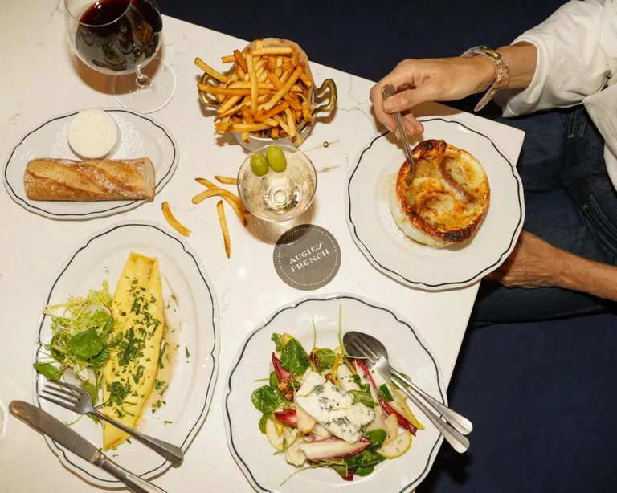
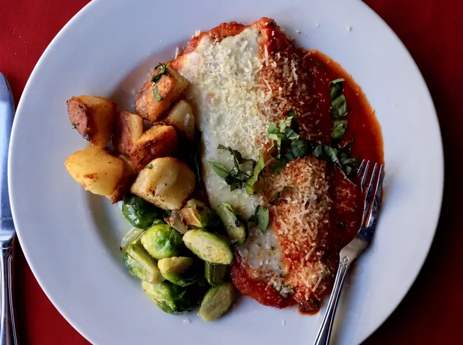
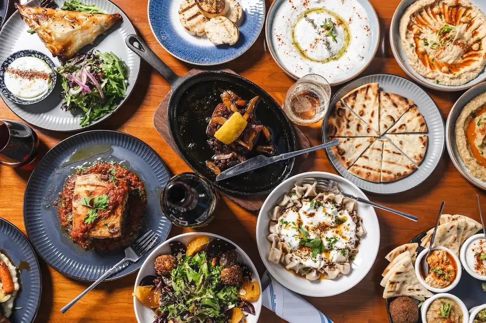

Downtown Santa Rosa is small enough to walk end to end, which makes dinner plans easy when you are staying on the square. Here are seven of our favorite tables, from French and Italian to Neapolitan pizza, Puerto Rican and Mediterranean, with the exact walking distance from both Hotel E and Art House.
The two starting points
Hotel E sits right on Old Courthouse Square at 37 Old Courthouse Square. Art House Santa Rosa is three blocks north at 620 7th Street. Every restaurant below is within a ten-minute walk of either one.
| Restaurant | From Hotel E | From Art House |
|---|---|---|
| Augie's French | 0.09 mi · 450 ftAbout 2 min | 0.21 mi · 1,130 ftAbout 4 min |
| El Coqui | 0.12 mi · 660 ftAbout 3 min | 0.12 mi · 660 ftAbout 3 min |
| Eddie's Kitchen | 0.12 mi · 640 ftAbout 3 min | 0.15 mi · 770 ftAbout 3 min |
| L'Oro di Napoli | 0.12 mi · 640 ftAbout 3 min | 0.23 mi · 1,200 ftAbout 5 min |
| Capriciano Osteria | 0.26 mi · 1,360 ftAbout 5 min | 0.10 mi · 510 ftAbout 2 min |
| Kalimera | 0.28 mi · 1,490 ftAbout 6 min | 0.15 mi · 815 ftAbout 3 min |
| Ca'Bianca | 0.40 mi · 2,100 ftAbout 8 min | 0.49 mi · 2,580 ftAbout 10 min |
Augie's French
535 4th St, Santa Rosa

The closest table to Hotel E on this list. Augie's opened in October 2023 inside the 1904 Maugg Building on Fourth Street and takes its name from Auguste Escoffier, the father of modern French cooking. It comes from Mark and Terri Stark, the restaurateurs behind several downtown favorites, and the menu leans classic bistro: beef bourguignon, a proper burger with frites and French cocktails.
Lunch is served on weekdays and dinner nightly, and it fills up on weekends, so book ahead for a special night out.
El Coqui
400 Mendocino Ave, Santa Rosa

Right between the two hotels, El Coqui is an easy pick no matter where you are staying. Friends Jackie Roman and Tina Jackson opened it in 2009, and it is still the only Puerto Rican restaurant in Santa Rosa. Expect mofongo, plantains in every form, house-made pique, sangria and a lively, music-filled room that feels more like a house party than a dining room.
Eddie's Kitchen
409 Mendocino Ave, Santa Rosa

Directly across Mendocino Avenue from El Coqui, Eddie's Kitchen is a relaxed neighborhood Italian spot for when you want a comforting plate of pasta without dressing up. Diners rave about the lasagna and Caesar salad, and starters like crispy calamari and steamed clams make it easy to share. Takeout is available too, handy if you would rather eat in your room.
L'Oro di Napoli
629 4th St, Santa Rosa
Just down Fourth Street from the square, L'Oro di Napoli, “the gold of Naples,” is the place for true Neapolitan pizza. Chef Domenico De Angelis hails from Naples, and most of what goes into the pies, from the flour and tomatoes to the olive oil and cheese, is imported from Italy. Expect thin centers and puffy, leopard-spotted crusts, plus a famously enormous lasagna you will only find at this Santa Rosa location.
Reservations are not taken, so plan for a short wait at peak dinner hours. One pizza is easy to share between two.
Capriciano Osteria
505 Mendocino Ave, Santa Rosa
The newest name on the list and the closest to Art House. Chef-owner Baki Bekci opened Capriciano this past summer in the former Tipsy Taco space, and it was packed within its first week. The kitchen pairs Italian classics with high-end local ingredients and a nod to Turkey's Turquoise Coast. Early favorites include the sea bass, the ravioli and the tiramisu, and the patio is a great spot on warm evenings.
Kalimera
458 B St, Santa Rosa

Kalimera means “good morning” in Greek, and this family-owned Mediterranean restaurant brings Greek and Turkish cooking to B Street. Order a spread of meze to share, such as dolmas, hummus, saganaki and calamari, then move on to grilled octopus, lamb kebabs or the combo kebab platter. The warm lamps and decor make it a cozy choice for a group, and there is a private room and patio for larger parties.
Ca'Bianca
835 2nd St, Santa Rosa
Worth the short stroll east. Ca'Bianca has served white-tablecloth Italian from a Victorian house on Second Street for 30 years, with a garden that hosts weddings and anniversaries. The menu travels the length of Italy, from Milan to Sicily: house-made pasta and bread, steaks, seafood classics and rich desserts. It is one of the most-reviewed restaurants in town and a long-standing pick for celebrations, and reservations are suggested.
Good to know
- Distances are walking routes measured on city sidewalks from each hotel, rounded to the nearest 0.01 mile; times assume an easy pace.
- Hours change seasonally, so check with each restaurant before you go.
- Every restaurant here also has a listing with address, phone and hours in the restaurant directory.
Plan your stay downtown
Browse hotels, restaurants, wineries and attractions, all in one place.
Open the directory